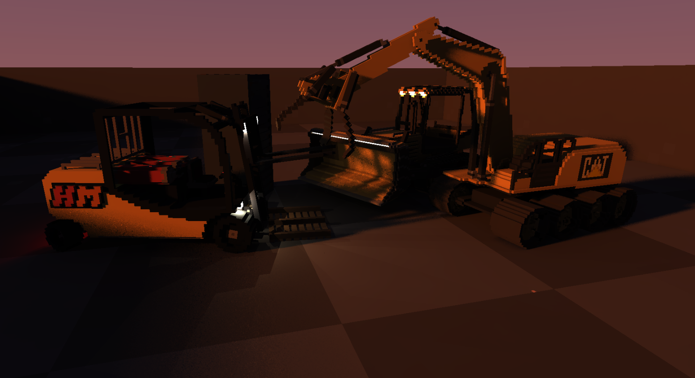
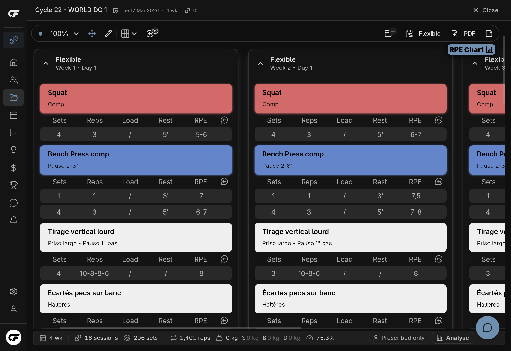
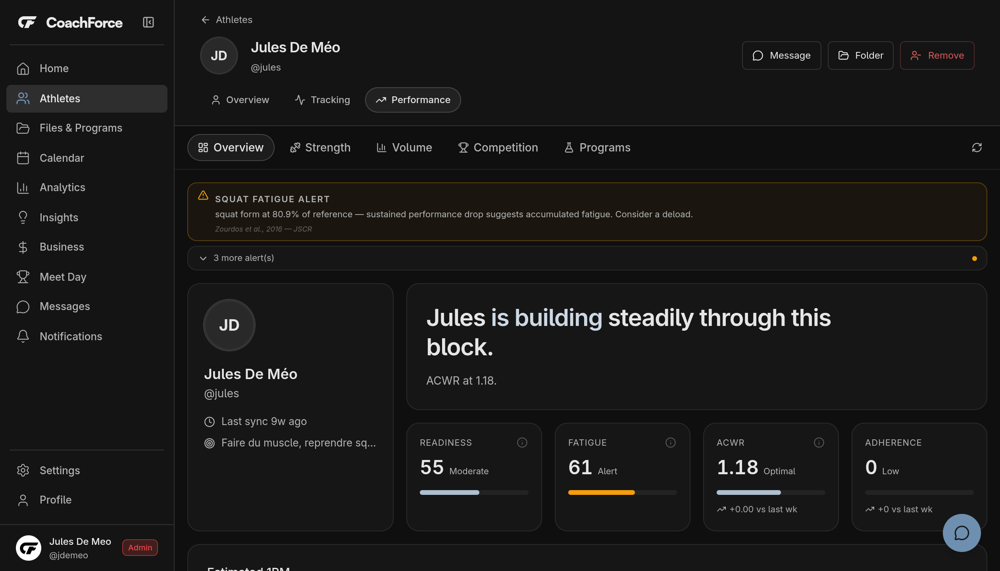

Jules De Meo
I write C/C++ and web languages for various projects.
My recent projects are a game engine in C++20 & Vulkan, a SaaS platform that I built and
deployed on my own. On the side I design analog circuits and build various things. This page is
there to give a window into those projects that aren't publicly available.
Student at 42 Perpignan · relocating to Czechia · English and French
Heavy Metal
⸻ •
•


Simulated machines, fully editable by the player.
Raytraced voxel scene, physics and indirect lighting, real time. [WIP]
A fully raytraced voxel engine. There is no rasterization anywhere in the frame, including primary visibility, and global illumination is computed from real geometry, dynamically, with minimal accumulation.
The constraint that shapes everything: minimal usage of accumulation. Everything needs to update quickly, the scenes are designed to be highly dynamic, an excessive use of temporal accumulation and denoising would introduce very visible artifacts. It means the budget has to be met by making the work genuinely cheap, which rules out the standard approach and forces new techniques, specifically designed for this engine.
Scenes are fully dynamic and destructible at 5 cm resolution, with realistic physics on a custom joint system. The engine targets midrange hardware.
My work is currently exclusively targeting the engine, creating the stable systems and a good ecosystem to then work on the game itself. The game is Heavy Metal, largely inspired by Teardown: the idea is a machine building game where players assemble heavy machinery to solve levels
CoachForce
⸻ •
•

Program builder interface.

Athlete tracking and load history.
A multi-tenant platform where strength coaches write training programs, track athlete progress and bill their clients. Architecture, code, design and the commercial side, all done myself. It is deployed and in production.
The interesting part is the analytics layer: estimated 1RM, RPE-based load prescription, tonnage and acute-to-chronic workload ratio, computed across an athlete's whole history. I compete in powerlifting at national level, which is why I knew what the numbers needed to mean before I wrote them. This is there to show the coaches what they wouldn't see otherwise.
Billing runs on Stripe Connect with direct charges, so each coach stays the merchant of record. That meant handling connected account onboarding and the KYC flow, which is the part nobody tells you about.
I use a hybrid approach for cloud storage, leveraging AWS S3 and Cloudflare R2 for best performance and cost efficiency. S3 for data that needs to be updated instantly (programs, analytics data, documents) and R2 for data that doesn't change but is requested very often (images, videos, audios)
The parts that were actually hard
⹃ Heavy Metal
I rebuilt the engine's traversal many times, octrees, BVHs, HW RayTracing. Each switch was made on measured evidence, with reproducible tests, and I kept every superseded version instead of deleting it. A structurally different implementation that renders an identical image is the only reliable way to catch bugs that depend on tree shape, and it caught several, that I fixed.
The physics sim was the hardest part. I went for the mainstream approach: maximal coordinates, velocity-level rows, sequential impulses, soft sub-stepped contacts. And that is still most of what runs. Where it stopped being enough was because of the game theme: the machines I want are full of closed joint loops, working under heavy load.
A closed loop is over-constrained: the solver's answer picks up a component that pushes on nothing, so nothing can see it or remove it, and it compounds every sub-step until the mechanism explodes.
Two things fixed it. Every joint row got a trust region that bleeds off whatever the rows cannot account for, and connected sets of rigid joint rows get grouped into islands solved as one by dense factorisation instead of sweeping. A sweep moves load one row per iteration and never catches up inside a frame's budget; the factorisation answers the whole island at once, and keeps the answer stable from one sub-step to the next.
⹃ CoachForce
On CoachForce, the hard part was not technical. Building alone for months means every decision about what ships, what waits and what gets cut is yours, with nobody to check it against. I had to learn that by understanding what each choice costs, and then by talking to around fifty coaches and managing the roadmap around real needs rather than what I felt like building.
The technical part had it's challenges, but nothing unusual.
What I have not done is work inside an engineering team. No code review from someone who knows the codebase better than I do, no estimate I had to defend, no handover. That is the gap, and it is exactly what I am looking for next.